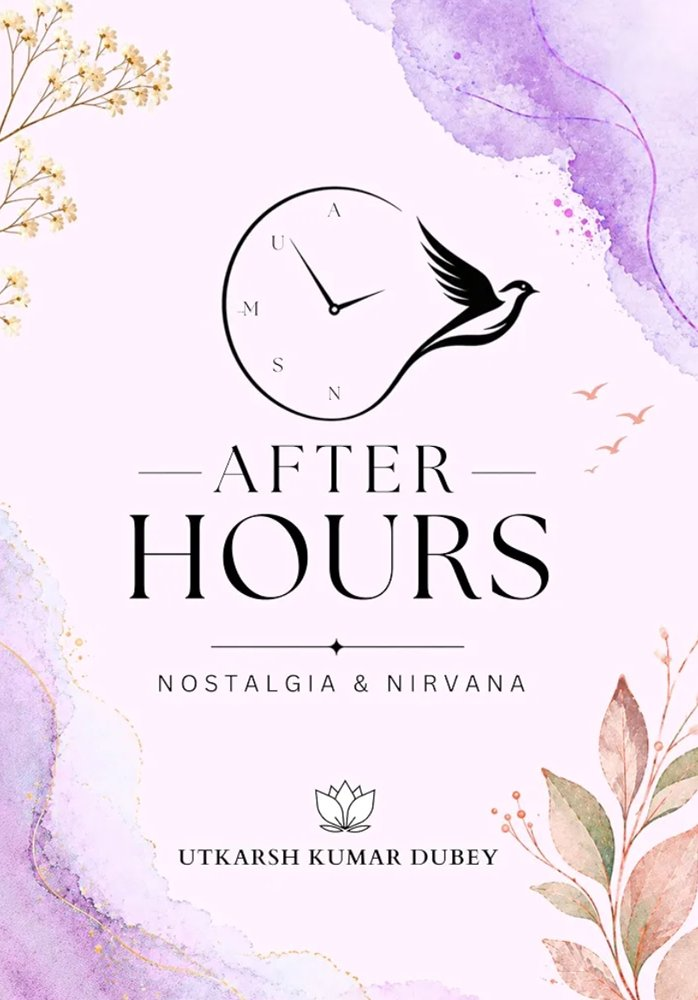

Some stories end with goodbye. Others remain long after the final words have been spoken.

After Hours: Nostalgia & Nirvana is a collection of five heartfelt stories, each exploring love, memories, longing, connection, and the emotions that remain when moments become memories.
Five stories. Five journeys. Five different perspectives on the many forms love can take.
From the quiet beauty of an unexpected connection to the ache of separation, each story captures a different shade of human emotion: moments that were fleeting yet unforgettable, words left unsaid, and people who live on in our memories long after they have walked away.
More than a collection of love stories, After Hours is an exploration of nostalgia itself, the strange and beautiful feeling of looking back at something that once meant everything.
Storyteller and entrepreneur, blending elegant narratives with his work at Utkarsh Technologies.
Debut author writing raw, honest stories of imperfect love.
Short story writer inspired by the classics, known for resilience and sharp wit.
Classical storyteller and scriptwriter with a timeless touch.
Student-athlete and emerging writer, weaving fate and feeling into fiction.
Because sometimes, the stories that stay with us are the ones that were never meant to be forgotten.
Utkarsh Technologies Limited, National Highway, Bina Project, Distt Sonbhadra, Uttar Pradesh.